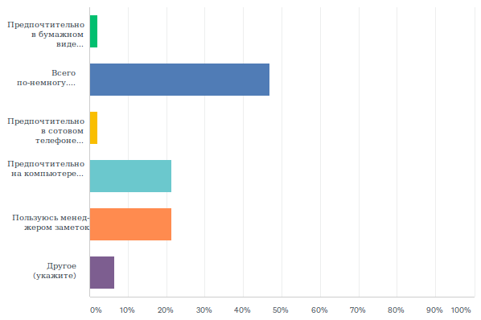

Всю прошедшую неделю на сайте WebHamster.ru проводился опрос посетителей о том, как они организовывают хранение своей личной и рабочей информации, и пользуются ли они менеджерами заметок (PIM-менеджерами). Опрос специально проводился без прицела на целевую аудиторию разрабатываемого мною PIM-менеджера MyTetra. Поэтому информация об опросе не размещалась на таких сайтах как linux.org.ru или habr.ru, чтобы в статистике было видно мнение казуальной части аудитории.
Я планировал, что в опросе будет участвовать максимальное число из доступного количества респондентов, а именно 100 человек (такое ограничение на бесплатном тарифе сайта SurveyMonkey.com). По факту было опрошена только половина (48 человек), потому что об опросе, как я писал выше, я нигде не сообщал, и была только новость на главной странице сайта. Дожидаться опроса 100 человек нет никакого смысла, потому что на процентное распределение в вариантах ответов большее количество опрашиваемых практически не повлияет.
Далее приводятся результаты опроса с моими комментариями.
1. Знаете ли вы, что такое менеджер заметок (PIM-менеджер) ?
|
Да |
79,17% 38 |
|
Нет |
6,25% 3 |
|
Нет уверености |
14,58% 7 |
|
ВСЕГО |
48 |
Этот вопрос должен был помочь понять, какая аудитория участвует в опросе. 20% не знающих и не уверенных показывает, что в опросе приняло участие достаточно большое количество неангажированной публики. Другими словами, я больше всего боялся, что в опросе примут участие только пользователи менеджера накопления информации MyTetra, которые приходят на этот сайт за новостями о развитии данного PIM-менеджера. И то, что получилось такое количество людей "не в теме", позволяет утверждать, что опрос получился достаточно независимым от "профессионалов". Хотя полностью исключить перекос в сторону пользователей MyTetra и других PIM-менеджеров не удалось, о чем будет сказано ниже.
2. Как вы храните личные записи, телефоны, контакты, копии документов, постоянно используемую документацию и прочее?

|
Предпочтительно в бумажном виде: бумажная записная книжка, бумажные ксерокопии, бумажная документация |
2,13% 1 |
|
Всего по-немногу. Контакты и телефоны в мобильном телефоне, копии документов на компьютере и на бумаге, документация в виде бумажных книг и файлов |
46,81% 22 |
|
Предпочтительно в сотовом телефоне, пользуюсь теми стандартными средствами, которые есть в телефоне |
2,13% 1 |
|
Предпочтительно на компьютере в виде текстовых файлов, файлов изображений и т. д. |
21,28% 10 |
|
Пользуюсь менеджером заметок |
21,28% 10 |
|
Другое (укажите) |
6,38% 3 |
|
ВСЕГО |
47 (1 skipped) |
Ответы "Другое":
Здесь видно, что почти половина опрошенных никак не озабочена систематизацией хранения данных (вариант "Всего понемногу"). У них данные разбросаны по устройствам и по бумажкам. Удивил здесь достаточно большой процент людей, которые пользуются менеджерами заметок. Более 20% сознательных - это очень много, и тут, видимо, все-таки сыграла свою роль целевая аудитория сайта WebHamster.ru.
3. О каких менеджерах заметок вы знаете? (Знаете название, и как минимум, видели его интерфейс хотя бы на скриншотах)

|
Evernote |
90,00% 36 |
|
– Microsoft OneNote |
70,00% 28 |
|
– Google Keep |
55,00% 22 |
|
– Zim |
30,00% 12 |
|
– CherryTree |
50,00% 20 |
|
– OutWiker |
25,00% 10 |
|
– MyTetra |
82,50% 33 |
|
– KeepNote |
25,00% 10 |
|
– Mars Notebook |
15,00% 6 |
|
– DokuWiki, MediaWiki, прочие wiki-движки |
40,00% 16 |
|
Всего респондентов: |
40, 8пропущено |